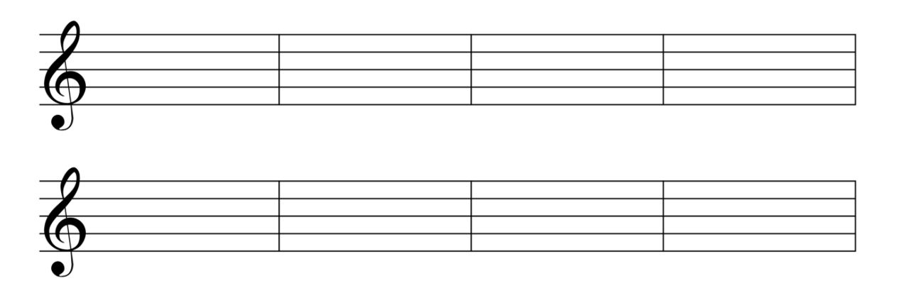

Directions: Using the rhythms below, drag and drop the note heads to the line or space of your choice in each measure. Each measure of music can only contain 4 beats. For example, you cannot fit a whole note and a half note in the same measure, as that would exceed the number of beats allowed per measure.

Tip: Drag any rhythm onto the staff. You can reuse items unlimited times. Drag to move; double-click to delete.